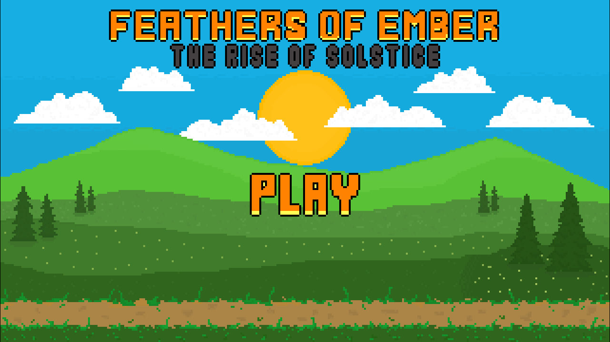
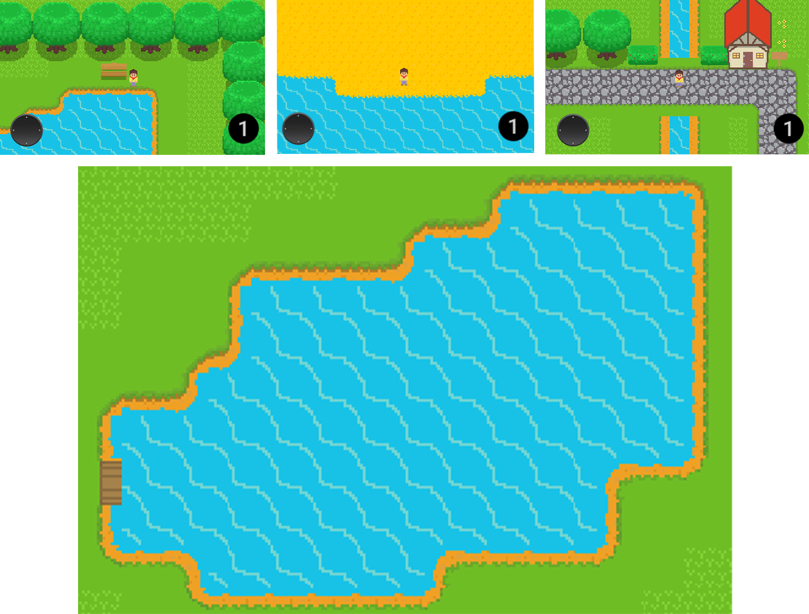

Belated Update – 16/07/2023
I haven’t updated the blog in some time now, but that’s not say I haven’t been busy! I’ve been working on creating assets for the game, a start menu, and the opening scene.
The start menu is the biggest piece of art I have ever done in Aseprite. Originally, it was going to be a practice run for the final product, but I liked how it was turning out, so I spent some more time working on it and I’m pleased with the result. The game also has a name, Feathers of Ember: The Rise of Solstice. ChatGPT helped with some ideas for the name and I really like it! Originally, I wasn't going to name the game as its only a personal project, but the start menu just didn't look right without a title. Designing the start menu brought another issue to my attention. That is, the variation in colour vibrancy on different devices. In a previous post I mentioned I had this issue from my laptop to my PC, but I had assumed that was due to the matte display on my laptop, but unfortunately this wasn’t the case. When I ran the game on my phone, the colours were dull and washed out. Today I spent half an hour adjusting the brightness of all of my game assets to rectify the issue and now the game looks as it should.
For the opening scene of the game, I want a UI letter to be displayed after the player presses the play button, this will give some context to why you are going to the island and where you should go once you arrive. I then wanted a cutscene of the player arriving on the beach at the bottom of the map by boat, once the cutscene is over the player will be free to explore the village and go on with their quest.
Initially, I’d planned for the boat to stop at the bottom of the beach, fade the screen to black while the player got off the boat, and then remove the black fade showing the player standing on the beach. This seemed like it was going to be more difficult, time consuming, and less effective than animating the player getting off the boat. So, I decided I’d go with the latter and animate the player getting off the boat.
First, I created a new camera to act as the cutscene camera and made it a child of the boat. Then, I disabled the main camera in my script and activated the cutscene camera. I made three empty game objects and assigned them with 2D colliders. I placed them in a horizontal row along the sea to serve as the path for the boat to follow. In the script, I applied left velocity to the boat when it collided with the start collider. It would then travel to the stop collider and play the jump off boat animation. For this to work, I drew the character onto the boat in Asperite. Next, I positioned the main character sprite in my game exactly where the drawn character would land. To avoid displaying two character sprites simultaneously, I had to make the main character sprite invisible while the boat approached and the animation played. The final frame of the animation depicted a crouching pose, so when the invisible player became visible again, it seamlessly blended with the animated character, creating the illusion of the player finishing the jump and standing up. This process required significant tweaking, as the character on the boat was part of the boat itself and did not have its own distinct coordinates for positioning the main character. After the animation played, I enabled the main camera and disabled the cutscene camera. The boat transitioned to another animation and sailed off without the player, eventually reaching its final collider and getting destroyed.
I’m really pleased with how the game is coming along. Next, I need to work on the UI letter that will be shown between the start screen and the boat cutscene and the start of the game will be in place.
Thanks for reading,
Jack
Start Menu

Asset Collage

Boat
.png)


.png)

.png)
.png)


.png)
.png)